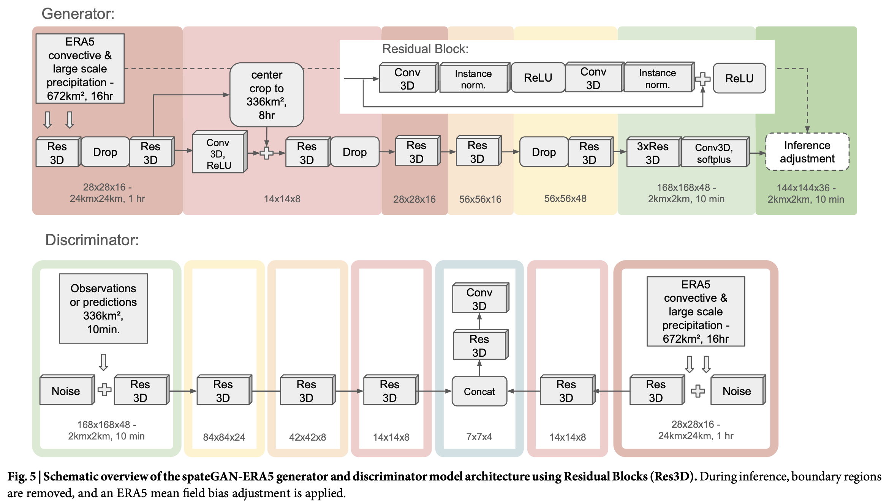
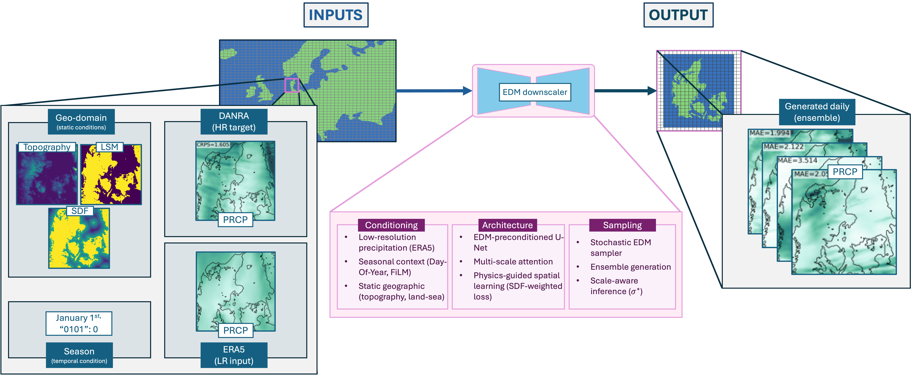

Model Approaches
SpateGAN
SpateGAN is a generative adversarial network that increases the spatial and temporal resolution of rainfall fields. A generator produces detailed rainfall sequences, and a discriminator helps it learn realistic rainfall patterns. The original model takes hourly, 24 km ERA5 precipitation and produces 10-minute, 2 km fields. It was trained on German radar observations. It can generate several rainfall realizations to represent uncertainty [1].
For this project, we adapted the pretrained model to IFS total precipitation and trained it further on Korean PEAKHSP targets. Plots and tables use these short names:
- SpateGAN-IFS: the pretrained generator adapted to one IFS total-precipitation channel, without Korean fine-tuning.
- SpateGAN-PEAK*: the PEAK checkpoint at step 500. This is the selected checkpoint.
- SpateGAN-KMA: the comparison checkpoint at step 1,000.
- SpateGAN-PEAK-5k: the PEAK training continued to step 5,000, to check whether longer training helps.
- CEDDAR-PEAK: the selected CEDDAR checkpoint, B0 configuration at epoch 19.
A selected checkpoint is the one the project chose under its recorded criteria. It is not necessarily the best on every metric, and it is not a claim that SpateGAN is better than CEDDAR.
| Detail | Original model | Our adaptation |
|---|---|---|
| Input dataset / variables | ERA5 convective and large-scale precipitation | IFS total precipitation, one input channel |
| Target dataset | German gauge-adjusted radar rainfall (RADKLIM-YW) | PEAKHSP rainfall prepared from KMA radar data |
| Input spatial resolution | 24 km | 24 km |
| Input temporal resolution | 1 hour | 3 hours |
| Output spatial resolution | 2 km | 2 km |
| Output temporal resolution | 10 minutes | 30 minutes |
| Input dimensions | 2 variables x 16 time steps x 28 x 28 cells | 1 variable x 16 time steps x 28 x 28 cells |
| Output / target dimensions | 48 time steps x 168 x 168 cells, before inference boundary trimming | 1 variable x 48 time steps x 168 x 168 target cells |
| Training region / period | Germany; 2009 to 2020 | Korea; eligible training records from February 2024 to December 2025, excluding validation blocks and leakage exclusions |
| Initialization | Trained from scratch | Adapted from pretrained weights |
The adapted input covers 48 hours, and the output covers the central 24 hours. The comparison includes SpateGAN-KMA, SpateGAN-PEAK, and SpateGAN-PEAK-5k. SpateGAN-KMA is the KMA checkpoint kept for comparison. The current records do not show that it is the best KMA checkpoint. SpateGAN-PEAK-5k did not replace step 500 as the selected checkpoint.


CEDDAR
CEDDAR is a diffusion model. It generates high-resolution rainfall by repeated denoising, guided by coarse-resolution precipitation. Each sample is one possible rainfall field, so several samples form an ensemble. The original model downscales daily ERA5 precipitation from about 30 km to 2.5 km over Denmark. Its reference data is the DANRA regional reanalysis [2].
For this project, we adapted CEDDAR to paired IFS and PEAKHSP data and trained the B0 configuration from scratch. The rainfall evaluation over all 1,518 forecasts is complete. The results below come from that evaluation, not from training or validation loss.
| Detail | Original model | Our adaptation |
|---|---|---|
| Input dataset / variables | ERA5 precipitation | IFS precipitation |
| Target dataset | DANRA regional reanalysis precipitation | PEAKHSP rainfall prepared from KMA radar data |
| Input spatial resolution | Approximately 30 km | 24 km input information, resampled to a 2 km grid |
| Input temporal resolution | 1 day | 3 hours |
| Output spatial resolution | 2.5 km | 2 km |
| Output temporal resolution | 1 day | 3 hours |
| Input dimensions | 1 precipitation channel x 128 x 128 aligned cells in the released B0 configuration | 1 TP channel x 128 x 128 aligned cells; no seasonal or geographic conditioning |
| Output / target dimensions | 1 precipitation channel x 128 x 128 cells in B0 | 1 precipitation channel x 128 x 128 cells |
| Training region / period | Denmark; original training dates not verified in this review | Korea; eligible training records from February 2024 to December 2025, excluding validation blocks and leakage exclusions |
| Initialization | Original paper training initialization not verified in this review | Random initialization, seed 504; corrected B0 run |
CEDDAR generates separate three-hour rainfall fields. It does not learn a continuous rainfall sequence. Consecutive outputs can be shown together to follow an event over time. The reported results use the corrected PEAK B0 checkpoint at epoch 19 (CEDDAR-PEAK), with three ensemble members and 56 denoising steps.
